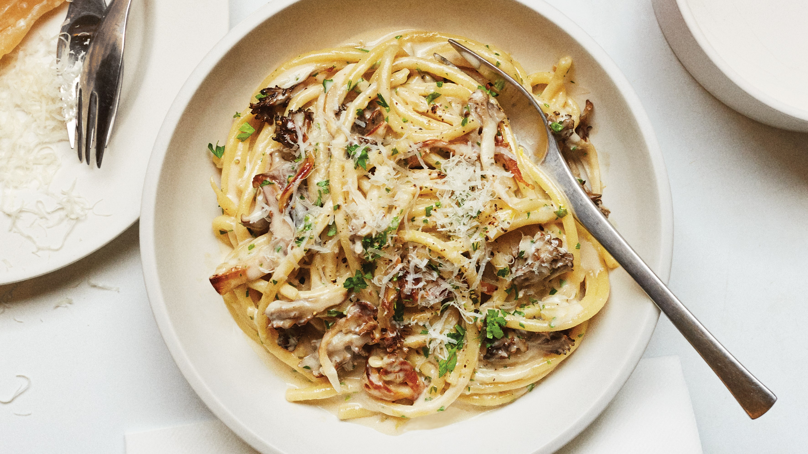

Creamy Mushroom Pasta

Description:
If you're in the mood for some creamy goodness, a hearty sauce while
getting in a vegeterian home cooked meal, you're in luck.
This creamy mushroom pasta will hit all the right spots while being super
easy to prepare during a weeknight.
Ingredients:
- Spaghetti or pasta of choice
- Mushrooms
- Garlic
- Vegetable Stock
- Parmesean
- Parsley
Steps:
-
Dice up the mushrooms into bite sized pieces and set aside. Start cooking
up the pasta while you also warm up a seperate pan to cook the sauce in.
-
Put the mushrooms into a pan with some olive oil and allow to sautee for
10 minutes or until you are happy with the amount of size reduction.
-
Add the garlic to the mushrooms and allow to incorporate for 30 seconds.
Add in the vegetable stock and allow the sauce to reduce to a
consistancy that you are happy with. I recommend 5 to 10 minutes.
-
Season the sauce with salt and pepper. Add in the cooked pasta and allow
to incorporate for a few minutes. Allow the sauce to stick to the pasta
and then add in the parmesean.